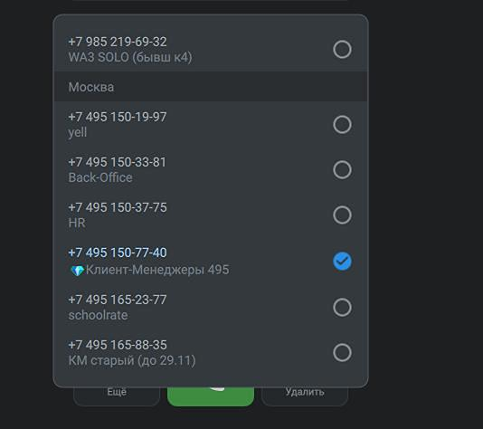

Начинаем звонок с номера «✔️БИЛАЙН ✔️» и в поле номера вместо «+» вводим 810.
Пример
Было: +37379876543
Стало: 81037379876543
6 касаний за 3 дня: когда звонить, когда писать клиенту и когда закрывать сделку
Цепочка касаний — последовательность контактов с клиентом после передачи в подбор. За 3 дня совершаем 6 касаний: по два касания каждый день. Каждое касание фиксируем в сделке.
Напоминание: касание — это всегда две попытки дозвона, если не дозвонились (НДЗ). Подробнее — в «Регламент звонков».
Два разных способа позвонить за рубеж:
Начинаем звонок с номера «✔️БИЛАЙН ✔️» и в поле номера вместо «+» вводим 810.
Пример
Было: +37379876543
Стало: 81037379876543
Выбираем номер с бриллиантом 💎.

Подбираем преподавателя и отправляем на согласование. Используем желаемый способ связи, который указал квалификатор.
Во второй половине первого дня — ещё одно касание (2 попытки дозвона).
Во второй день, вторая половина — ещё одно касание (2 попытки дозвона).
В третий день, вторая половина — касание (2 попытки дозвона).
Этапы воронки — в блоке «Этапы в amoCRM».
Совет: Перед звонком просмотрите переписку и прошлые касания. Напоминания по заявке после подбора — в «Работа с заявками».